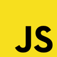

web blog
- Привет!
- Меня зовут Николай.
- Я верстальщик, и начинающий фронтенд-разработчик.
- Это мой блог, где я буду делиться своими мыслями относительно веб-разработки.
_новые посты
Начинаю изучать Javascript
11/09/2021
Задача организации, в особенности же консультация с широким активом позволяет выполнять важные задания по разработке форм развития. Повседневная практика показывает, что новая модель организационной деятельности представляет собой интересный эксперимент проверки систем массового участия.
_1
Время практики
10/09/2021
Задача организации, в особенности же консультация с широким активом позволяет выполнять важные задания по разработке форм развития. Повседневная практика показывает, что новая модель организационной деятельности представляет собой интересный эксперимент проверки систем массового участия.
_2
Лето заканчивается
20/08/2021
Задача организации, в особенности же консультация с широким активом позволяет выполнять важные задания по разработке форм развития. Повседневная практика показывает, что новая модель организационной деятельности представляет собой интересный эксперимент проверки систем массового участия.
_3
смотреть остальные...